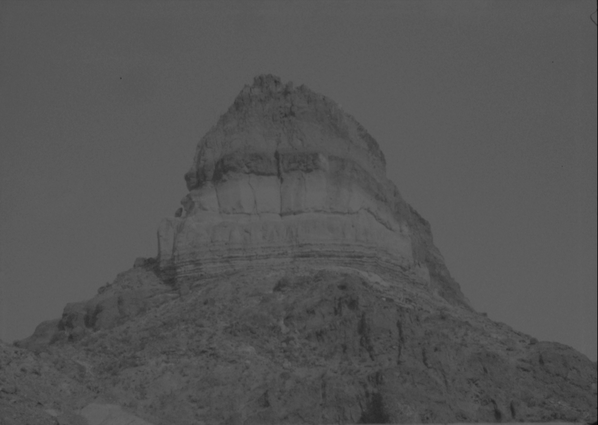
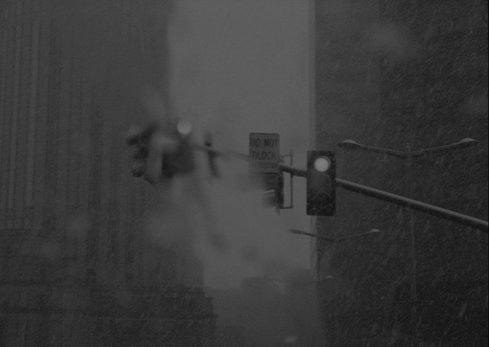

I WOKE UP IN THE MORNING
In a cycle from the populated city of Boston in the winter to the unoccupied Chihuahuan desert in the summer,
there's always the sense of dissatisfaction about where one situtates oneself in time and space, longing for
things that one seeks without realizing that things one wishes to preserve have already slipped away.
The work is completed with emerging curator and photographer Yutong Shi. The video installation for this work was selected in the group exhibition "Of Soiled Bodies" at Gelman Gallery in RISD Museum.

Still from I Woke Up in the Morning, shot in Terlingua, Texas, 2021
I WOKE UP IN THE MORNING, THE POEM SEQUENCE
I woke up in the morning.
I watched a short film of a man taking off his skin for his wife.
Part of me went missing and thought of her when watching the couple cuddle.
I woke up in the morning.
I dreamed about leaning my head over on her shoulder.
I hit the wall against my head,
and against the wall, I hit my head.
I forgot that I woke up in the morning.
I found everything seemed to be off.
I don't dream or know anything.
I woke up in the morning.
I think about the Bahamas.
I always know it's not about the place but the people.
I can't fall asleep in the morning.
I can't wake up either.
Shots to start/end the day.
I woke up in the morning.
I realize I am in Seattle but
I miss some people 2,889 miles away.
I woke up in the morning.
I had this bizarre dream last night.
I reserve my house slippers for a special person.
I woke up in the morning.
I dreamed about the one person I wish to hear from the past, me losing teeth along my fly ride and being covered in white paint.
I must miss that one person so deeply that I don't want to wake up from that dream.
I woke up in the morning.
I dreamed about the state and mindset I had when I was younger searching for you and how everyone else was trying to stop me from that quest because it was all going in vain.
I woke up, realizing that I was paralyzed and remembered things that were long forgotten.
—Lilan Yang, Everything Comes Full Circle, 2022

Still from I Woke Up in the Morning, shot in Boston, Massachusetts, 2021
AFTERWORDS
in order to avoid the traffic on I-95 and I-93.
Always drive outbound from Boston in the mornings,
but Friday afternoons are the worst both ways.
I never enjoy commuting. I'm wasting time while flying at 80mph.
It doesn't feel like flying but rather trapped in a mundane routine.
I always wish I was elsewhere.
But these moments are my only time being myself.
My only time to converse with my own thoughts.
who spent his whole summer working at the Large Hadron Collider in Europe.
He told me that this was his first time going back to the states as if going home.
We went to Santouka ramen near Harvard Square right before they closed.
The ramen there didn't taste like it's worth the long waiting line outside.
Jerry missed the late night ramen so much.
Yet I was tired of Boston.
Every one or two weeks I would drive north so that Yutong could see our Ollie boy.
Somehow we started to settle and build bonds.
Bonds will break.
Loneliness can be borne.
Then again Boston isn't my real home.
Home is somewhere I cannot return to.